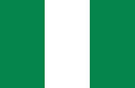
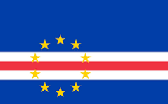
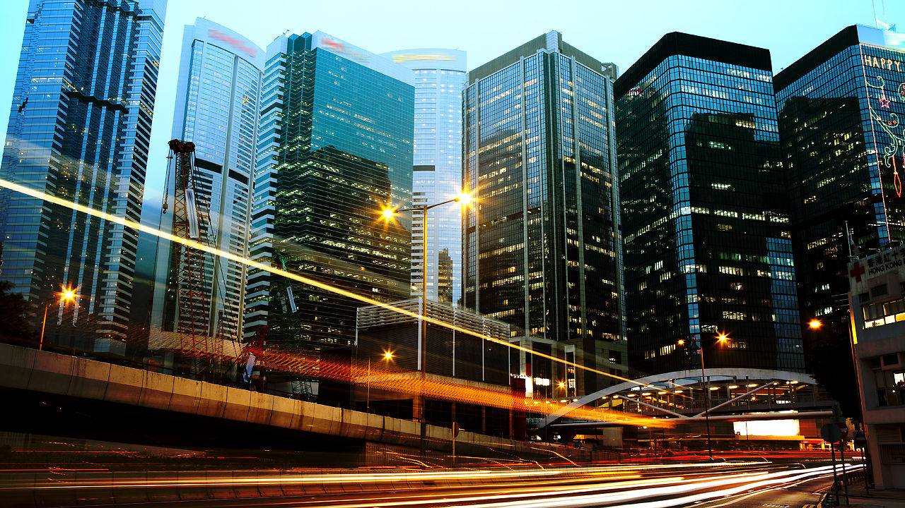
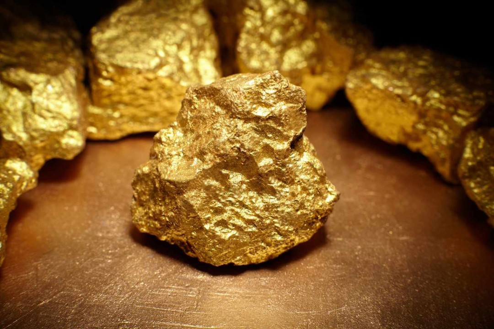
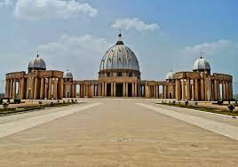
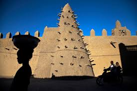
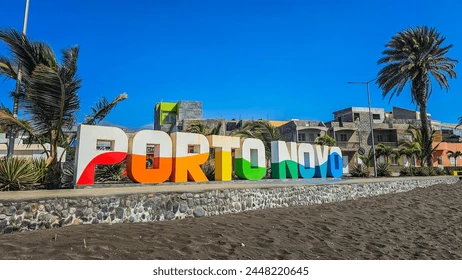
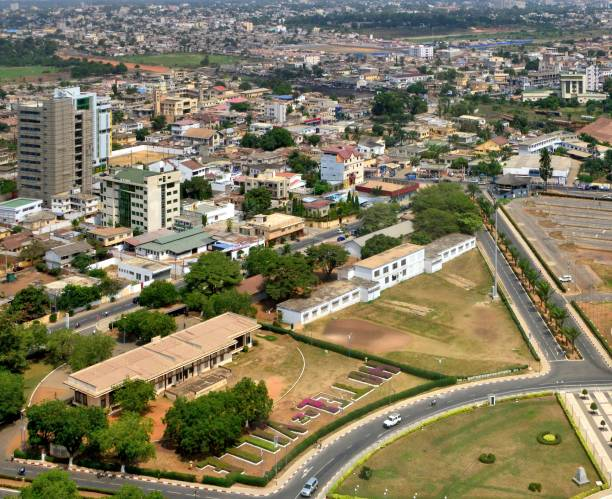
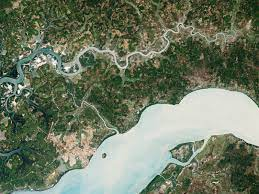

Day 4: Exploring West Africa
Introduction to West Africa
West Africa is a lively and colorful part of Africa. It's famous for its music, dances, and festivals. People here are known for their warm hospitality and rich traditions.

How Many Countries in West Africa?
There are 16 countries in West Africa. Some of the well-known countries include Nigeria, Ghana, and Senegal. Each of these countries has its own unique culture and history.
What is the Biggest Country in West Africa?
The biggest country in West Africa by area is Niger. However, Nigeria has the largest population and is very influential in the region.

Main Touristic Areas in West Africa
West Africa has many exciting places to visit. Here are some popular touristic areas:
- Cape Coast Castle (Ghana): A historic castle that played a role in the transatlantic slave trade.
- Djenne (Mali): Known for its beautiful mud-brick architecture.
- Yankari National Park (Nigeria): A wildlife park with lots of animals like elephants and baboons.
- Lake Volta (Ghana): One of the largest man-made lakes in the world.
Countries, Their Flags, and Capital Cities in West Africa
| Country | Flag | Capital City |
|---|---|---|
| Nigeria |  | Abuja |
| Ghana |  |
Accra |
| Senegal |  |
Dakar |
| Ivory Coast |  |
Yamoussoukro |
| Mali |  |
Bamako |
| Niger |  |
Niamey |
| Burkina Faso |  |
Ouagadougou |
| Guinea |  |
Conakry |
| Benin |  |
Porto-Novo |
| Sierra Leone |  |
Freetown |
| Togo |  |
Lomé |
| Liberia |  |
Monrovia |
| Mauritania |  |
Nouakchott |
| Gambia |  |
Banjul |
| Cape Verde |  | Praia |
| Guinea-Bissau |  |
Bissau |
Countries in Focus
Nigeria
Nigeria is a country with diverse cultures, languages, and landscapes. It's known for its rich history and vibrant cities like Lagos.
Ghana
Ghana is famous for its gold resources and historical sites like Cape Coast Castle, which played a significant role in the transatlantic slave trade.
Senegal

Senegal is known for its music, especially the popular genre called Mbalax. The capital, Dakar, is a vibrant city with a rich culture.
Ivory Coast
Ivory Coast is the world's largest producer of cocoa beans. Its capital, Yamoussoukro, is known for its large basilica.
Mali
Mali is famous for its ancient city of Timbuktu, which was once a center of learning and culture in Africa.
Niger

Niger is home to the Sahara Desert, offering breathtaking views of sand dunes and oases.
Burkina Faso

Burkina Faso is known for its music and film festivals, particularly the FESPACO film festival held in Ouagadougou.
Benin
Benin is known for its historical kingdom of Dahomey, and its capital, Porto-Novo, showcases vibrant culture and history.
Sierra Leone

Sierra Leone is known for its beautiful beaches and the tragic history of the civil war, which the country is still recovering from.
Togo
Togo is a narrow strip of land with a diverse landscape, from beaches to mountains. Its capital, Lomé, is a bustling city.
Liberia

Liberia is Africa's oldest republic, founded by freed American slaves. The country is known for its historical significance and beautiful coastline.
Mauritania
Mauritania is largely covered by the Sahara Desert, and its economy is primarily based on mining and fishing.
Gambia

Gambia is the smallest country in mainland Africa, known for its river, which flows through the entire country and gives it its name.
Cape Verde

Cape Verde is an island nation known for its Creole Portuguese-African culture, beautiful beaches, and volcanic landscapes.
Guinea-Bissau
Guinea-Bissau is known for its national parks and wildlife, particularly the Orango Islands National Park, which is a haven for rare species.